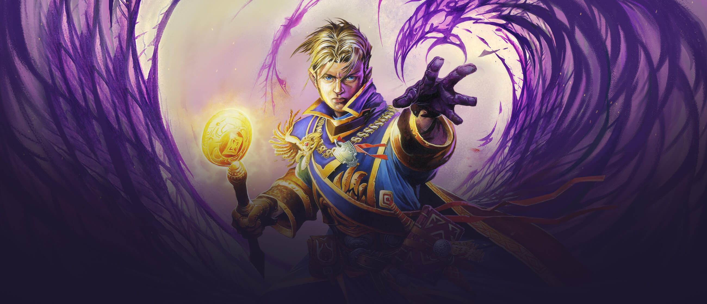

<ion-view view-title="Classes">
  <ion-content>

    <div class="list card">

      <div class="item item-avatar">
        <h2>Classes</h2>
        <p>São apenas 9 classes no Hearthstone</p>
      </div>

      <div class="item item-body">
        
        <h2>Mago</h2>
        <p>
          Essa é a primeira classe que você conhece no jogo. Você vai fazer o tutorial com ela, e terá que usá-la para
          ganhar seus
          primeiros jogos que vão desbloquear as outras classes. Ela é muito bem representada pela magnífica Jaina
          Proudmore.
          O poder heroico dela é uma pequena bola de fogo, que dá 1 de dano em um alvo a sua escolha. Jogar com mago
          significa
          jogar com segredos e, é claro, magias: arcanas, de fogo e de água. E temos nossa Bola de Fogo op, por (4)
          manas,
          dando 6 de dano. Sabendo disso, temos uma carta lendária que pode nos trazer litros de diversão (ou litros de
          bolas
          de fogo): Arquimago Antônidas, que nos dá uma simples bola de fogo de graça sempre que castamos um feitiço.
        </p>
      </div>
      <div class="item item-body">
        
        <h2>Caçador</h2>
        <p>
          Seu representante Rexxar é apelidado de Huexxar pela comunidade, por ser uma classe incrívelmente agressiva.
          Seu poder heroico
          não desmente isso: ele dá 2 de dano ao herói inimigo. As cartas de classe dele buffam feras, por isso seus
          decks
          costumam estar cheios delas. Javalis, Crocoliscos, Jubaltas, ele vai soltar o zoológico em você e você estará
          morto
          antes de entender o que está acontecendo. E se, por (3) manas ele evocar um cachorrinho 1/1 para cada lacaio
          que
          você tiver em campo? Meio chato, né? E ele ainda está repleto de armadilhas em forma de segredo. Sua lendária
          Rei
          Mó faz a tela do oponente tremer com tanto dano.
        </p>
      </div>
      <div class="item item-body">
        
        <h2>Ladino</h2>
        <p>
          Representada por Valira Sanguinar, a classe ladino é muito divertida de jogar. Seu poder heroico equipa uma
          arma 1/2: isso
          significa que a própria Valira pode atacar, dando 1 de dano no que quiser e tomando dano equivalente ao ataque
          do seu alvo. E ela pode fazer isso 2 vezes, depois a arma quebra, e ela terá que usar o poder heroico para
          equipá-la
          de novo. Lembrando que, assim como lacaios, ela só pode atacar uma vez por turno. Ladinos funcionam com
          mecânica
          de Combo, um efeito que ativa se você já tiver jogado uma carta anteriormente nesse turno. A classe é cheia de
          feitços de custo baixo, que além de facilitar o efeito Combo, fazem sua lendária Edwin VanCleef ter chance de
          ficar
          bem grande.
        </p>
      </div>
      <div class="item item-body">
        
        <h2>Bruxo</h2>
        <p>
          Essa é a classe que eu menos gostei quando comecei a jogar e hoje é a minha preferida. Gul’dan paga preços
          além de cristais
          de mana para jogar. O custo das cartas são reduzidos por descartar cartas ou dar dano no seu próprio herói. O
          próprio
          poder heroico lhe dá dois de dano e compra uma carta. Além disso, assim com o Caçador tem temáticca de feras,
          o
          bruxo pode evocar demônios, e também tem buffs exclusivos para eles. Sua lendária é bem curiosa, substitui o
          seu
          herói por um novo incrívelmente roubado, chamado Jaraxxus (Seu poder heroico evoca um infernal 6/6 e ele tem
          uma
          super arma!).
        </p>
      </div>
      <div class="item item-body">
        
        <h2>Paladino</h2>
        <p>
          Uther representa uma classe que tem muitas curas desequilibradas. Essa classe tem um combo que destrói todos
          os lacaios da
          mesa com (4) manas e faz o oponente bater com a cabeça no teclado. Seu poder heroico evoca um recruta 1/1 – um
          token que, se evocado todo turno, pode encher bastante o saco. Suas cartas de classe possuem algumas armas,
          segredos,
          curas, escudos divinos e buffs para lacaios que são chamados de “bençãos”. A lendária dele é tão forte que eu
          desisto
          80% das vezes que meu oponente joga ela: Tirion.
        </p>
      </div>
      <div class="item item-body">
        
        <h2>Sacerdote</h2>
        <p>
          Representado por Anduin Wrynn, as mecânicas são bem óbvias: Ele cura e dá vida. Poder heroico: Restaura 2 de
          vida de um alvo.
          O inesperado aqui é que temos cartas que podem transformar sua cura em dano, e uma carta que restaura 4 de
          vida
          de todos os lacaios agora tem potencial para matar geral. Cartas dessa classe aumentam a vida dos seus lacaios
          e destroem os do oponente com palavras sombrias. E a sua lendária Profeta Velen pode fazer um belo estrago no
          final
          do jogo.
        </p>
      </div>
      <div class="item item-body">
        
        <h2>Xamã</h2>
        <p>
          Nada como o bom e velho Thrall para respresentar os elementos. Seu poder heroico evoca um totem aleatório,
          dentre quatro
          opções: 0/2 com provocar, 0/2 com “+1 Dano de Feitiço”, 0/2 que cura um de seus lacaios no fim do seu turno ou
          1/1. O Xamã possui seus elementais, e joga com uma mecânica de Sobrecarga, onde você joga cartas por um custo
          muito
          baixo, mas fica com cristais de mana “quebrados” no próximo turno. Outra mecânica de suas cartas é poder dar
          fúria
          dos ventos para um lacaio, fazendo com que ele possa atacar duas vezes em um único turno. Sua lendária Al’Akir
          tem tantos efeitos que fica difícil de acreditar.
        </p>
      </div>
      <div class="item item-body">
        
        <h2>Druida</h2>
        <p>
          O que acha de jogar com Malfúrion Tempesfúria? Essa classe tem lacaios defensivos enormes, que tem provocar
          (precisam ser
          atacados). A mecânica que aparece aqui é “Escolha Um”, com duas opções para a mesma carta. Dê 3 de dano ou dê
          1
          de dano e compre uma carta. É uma mecânica que só aparece nas cartas de Druida. O poder heroico dele faz com
          que
          ele receba 1 de ataque até o final do turno e 1 de armadura (para sempre). Falaremos mais sobre armadura
          quando
          falarmos do guerreiro. 1 de ataque significa que Malfurion pode atacar dando 1 de dano, somente esse turno.
          Sua
          lendária Cenarius pode te fazer ganhar o jogo no último momento.
        </p>
      </div>
      <div class="item item-body">
        
        <h2>Guerreiro</h2>
        <p>
          Garrosh Grito Infernal é obviamente nosso guerreiro. Seu poder heroico lhe dá 2 de Armadura, que é como uma
          vida extra. Você
          não pode curar seu herói acima de 30, mas pode ter quanta armadura quiser. O guerreiro tem muitas armas nas
          suas
          cartas de classe. Uma mecânica comum é a de enfurecer (lacaios com enfurecer ativam algum efeito quando estão
          feridos),
          já que ele possui bons modos de dar dano em seus própios lacaios. Sua lendária é seu próprio pai: Grommash
          Grito
          Infernal, e quando ele enfurece pode dar bastante dano.
        </p>
      </div>
    </div>

    <p>Texto retirado do <a href="https://cristaldemana.com.br/2014/09/hearthstone-conhecendo-as-classes/">Cristal de
        Mana</a></p>
  </ion-content>
</ion-view>